1. Что известно о Фар Мэддинге
Фар Мэддинг — независимый город-государство, безопасность которого опирается на древний тер’ангриал Страж. В пределах его действия направляющие не могут нормально ощущать Источник и создавать плетения Единой Силы. Это не временная военная мера, а один из базовых принципов городского устройства.
Страж, Башни Стража и Гильдия — не одно и то же. Страж существовал задолго до современной Гильдии и является первичной основой подавления Единой Силы. Башни Стража — более поздняя технологическая инфраструктура: они усиливают, стабилизируют, распределяют и позволяют регулировать доступные параметры защитного поля. Часть системы опирается на древние подземные сооружения, устройство которых Гильдия понимает не полностью.
Отказ отдельной Башни может вызвать локальную или кратковременную нестабильность поля, включая возвращение ощущения Источника, но сам по себе не означает автоматического отключения древнего Стража. Масштаб аварии определяется конкретным устройством или сценой.
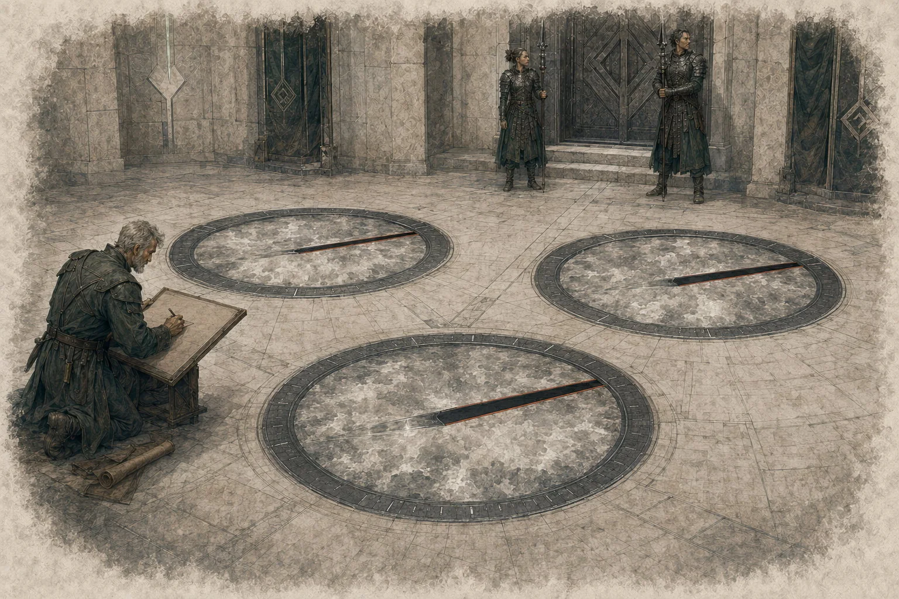
2. Возникновение Гильдии
После Последней Битвы Фар Мэддинг последовательно развивал оборону, медицину, инженерное образование и разведку без зависимости от личного направления Единой Силы. Технические школы, городская стража и архивные службы постепенно объединились вокруг исследования найденной под городом древней инфраструктуры. Так возникла Гильдия Хранителей — инженерный корпус, служба безопасности, исследовательское общество и административная опора города.
Ранговая система Гильдии не требует способности направлять Единую Силу и не предоставляет её. Хранители используют кристаллотехнику, алхимию, хирургическую имплантацию, биотехнологии и реликтовые системы. Гильдия может исследовать и применять автономные тер’ангриалы и технологии Первой Эпохи, если их функция не требует от носителя направления Единой Силы.
К 270 году после Последней Битвы Гильдия обслуживает Башни Стража, городскую кристаллическую сеть, научные и медицинские корпуса, готовит офицеров и инженеров, исследует аномалии и древние находки, выдаёт допуски к опасным технологиям и поддерживает внешние наблюдательные сети.
3. Кристаллическая сеть
Кристаллическая сеть Фар Мэддинга — распределительная инфраструктура, а не персональная пирамида передачи энергии от подчинённого начальнику. Гражданские и служебные кристаллы передают регламентированный энерговзнос в общие узлы и накопители; оттуда энергия распределяется между медициной, инженерными системами, обороной и другими предусмотренными контурами.
Гражданский кристалл не даёт ранга и не делает носителя членом Гильдии. Исторически участие в сети возникло как добровольное коллективное соглашение семей и цехов; к 270 ПБ оно стало обычной гражданской обязанностью постоянных граждан и зарегистрированных жителей. Временные посетители, иностранцы, торговцы и дипломаты не подключаются автоматически. Конкретные юридические санкции за отказ правила Иерархии не устанавливают.
Служебный ранговый кристалл — персонально настроенный имплант Хранителя. Если у постоянного жителя уже был гражданский кристалл, при вступлении его модернизируют, заменяют или перестраивают в единый служебный контур; стандартная модель не предполагает второго параллельного импланта.
| Понятие | Значение |
|---|---|
| Гражданский кристалл | Имплант участия в городской сети; не даёт ранга, ранговых способностей или членства в Гильдии. |
| Служебный ранговый кристалл | Индивидуально настроенный имплант Хранителя, связанный с его персональным ранговым каналом и служебными правами доступа. |
| Энерговзнос | Технический показатель вклада в общую распределительную сеть. Он не является процентом хитов, Hit Dice, истощения или иного игрового ресурса. |
| Ранговый канал | Персональная связь, через которую реализуются права доступа и те способности ранга, которым требуется работа служебного контура. |
| Компенсатор | Алхимическое или техническое средство для конкретного медицинского или аварийного режима; не отдельный универсальный ресурс Иерархии. |
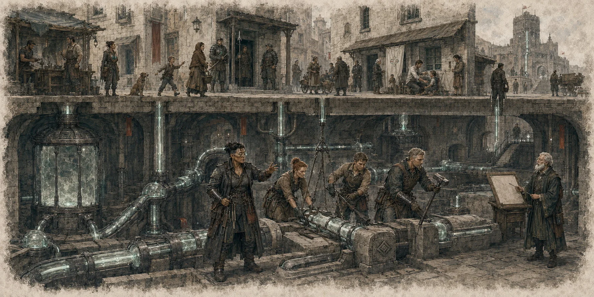
4. Доктрина и присяга
Хранитель приносит клятву Гильдии, Фар Мэддингу и установленному порядку службы. Это обязательное институциональное условие вступления, но не плетение, не сверхъестественный договор и не эффект контроля воли. Механические способности обеспечивает служебный кристалл и персональный ранговый канал, а не произнесённые слова.
Нарушение присяги не отключает способности автоматически и не причиняет мистического наказания. Оно может стать основанием для дисциплинарной процедуры, временного глушения или полного отзыва ранговой связи. Служебный кристалл не обеспечивает автоматическую лояльность и не ограничивает свободу воли персонажа.
5. Совет Девяти
К 270 ПБ Совет Девяти является высшим политическим и административным органом Фар Мэддинга. В его состав входят восемь Советников Гильдии IV ранга и один Главный Хранитель V ранга. Инженеры-Хранители III ранга не являются членами Совета, даже если занимают важные военные, научные или административные должности.
| Ситуация | Правило |
|---|---|
| Обычное решение | Требует кворума не менее 5 активных членов и принимается большинством участвующих. Главный Хранитель может применить абсолютное вето до вступления решения в силу. |
| Вето | Является отрицательным полномочием: блокирует решение, но не позволяет Главному Хранителю единолично принять вопрос, требующий решения Совета. |
| Аудит Главного Хранителя | В официально открытом аудите собственной деятельности Главный Хранитель не голосует и не использует вето против расследования, обеспечительных мер или итогового решения. |
| Снятие V ранга | В собственном аудите требует не менее 6 голосов из 8 Советников IV ранга. Такое решение запускает полный отзыв V-профиля. |
| Временно исполняющий обязанности | При вакансии V ранга восемь Советников выбирают одного из себя не менее чем 5 голосами. Он остаётся IV ранга и не получает V-ранговые способности, абсолютное вето или центральный V-профиль. |
| Новый Главный Хранитель | Избирается только из действующих Советников IV ранга, не менее чем 6 голосами из 8. V ранг возникает лишь после завершения технологической процедуры активации; активный V-профиль в штатной структуре один. |
| Вакансия Советника | Заполняется из действующих Инженеров-Хранителей III ранга. При одной вакансии требуется не менее 5 голосов из 8 действующих членов Совета, включая Главного Хранителя; его обычное вето действует. Повышение завершается только после технической активации IV-профиля. |
Совет Квот обладает автономией в пределах распределения энергии и оперативных квот, но не присваивает и не отзывает ранги. Его полномочия не делают его вторым правительством города.
6. Подразделения Гильдии
| Подразделение | Задачи | Обычные роли персонажей |
|---|---|---|
| Академия Хранителей | Обучение, исследования, испытания кандидатов и повышение квалификации. | Кадет, преподаватель, архивист, исследователь. |
| Корпус полевых агентов | Разведка аномалий и внешних угроз, работа под прикрытием, связь с удалёнными наблюдателями. | Разведчик, дипломат, проводник, следователь. |
| Инженерный корпус | Башни Стража, кристалл-каналы, городские узлы, ремонт и техническая разведка. | Инженер, кристаллограф, сапёр, смотритель башни. |
| Алхимическая лаборатория | Компенсаторы, защитные смеси, медицинские реагенты и полевое снабжение. | Алхимик, медик, снабженец, испытатель. |
| Стража Хранителей | Оборона, досмотр, сопровождение, городской порядок и контрразведка. | Офицер, дознаватель, телохранитель, караульный. |
| Архив Гильдии | Хранение отчётов, проверка источников, выдача допусков и восстановление истории инцидентов. | Архивист, аналитик, шифровальщик, аудитор. |
7. Гильдия и горожане
Для большинства жителей Гильдия одновременно является защитником, работодателем и неизбежной бюрократией. Кристаллическая сеть обслуживает весь город, но участие в ней не означает членства в Гильдии. Постоянные граждане и зарегистрированные жители несут установленную гражданскую обязанность по энерговзносу; временные посетители и иностранцы не подключаются автоматически.
Хранитель обладает служебным авторитетом только в пределах мандата и должности. Сам ранг не даёт общего права командовать гражданами, проводить досмотр, реквизицию или задержание. Для таких действий требуется соответствующее полномочие Стражи или действующий аварийный протокол. Злоупотребление знаком Гильдии является дисциплинарным нарушением.
8. Внешние отношения
Фар Мэддинг поддерживает контролируемый нейтралитет и предпочитает официальные каналы обмена товарами, сведениями и научными результатами. Направляющим не запрещено посещать город, но они заранее предупреждаются о действии Стража и не приобретают исключений из его режима только благодаря статусу или организации.
| Сторона | Официальное отношение Гильдии |
|---|---|
| Иерархия Единства | Осторожный научный обмен при полном контроле доступа к кристаллическим системам. |
| Хрустальный Трон | Дипломатическая дистанция и торговля через проверенные каналы. |
| Белая Башня и Айя | Профессиональный диалог возможен, но технологии Стража и Гильдии не передаются без установленного решения. |
| Орден Стражей Узора | Ситуативное сотрудничество при угрозах, выходящих за возможности одной стороны. |
| Торговые дома | Основной законный канал внешних поставок и экономический буфер. |
9. Как вступают в Гильдию
Наиболее обычный путь начинается в Академии, но взрослого специалиста могут принять после отдельной аттестации. Происхождение, профессия и уровень персонажа не дают автоматического ранга. Кандидат должен подтвердить профессиональную пригодность, способность соблюдать протокол и готовность отвечать за последствия решений.
Активный ранг Гильдии также не совмещается с активным рангом другой Иерархии. Перед вступлением прежняя иерархическая связь должна быть прекращена. Если Хранитель позднее получает другую активную иерархическую связь, стандартным последствием является полный отзыв связи с Гильдией.
Вступление проходит последовательно: проверка кандидата → обучение → медицинская настройка и формирование служебного контура → период стабилизации → присяга и первое служебное испытание → активация I ранга. Академия может ускорить подготовку, но не позволяет механически пропустить I ранг.
10. Имплантация и обслуживание
Служебный ранговый кристалл — интегрированный персональный имплант. Его точное положение выбирает имплантолог с учётом тела, профессии и снаряжения. В штатной модели у Хранителя один основной личный кристаллический контур: гражданский имплант постоянного жителя при вступлении модернизируется или заменяется служебным.
Кристалл индивидуально настраивается на конкретного носителя. Кража, наследование, извлечение или пересадка чужого импланта не передают ранг. Чужой кристалл можно исследовать, разобрать или перенастроить технологической процедурой, но новый носитель всё равно должен пройти предусмотренное последовательное получение ранга.
По умолчанию служебный кристалл не имеет отдельного боевого КД, запаса хитов или универсальной механики прицельной атаки. Обычный урон носителю не повреждает имплант автоматически. Отдельно воздействовать на кристалл или ранговый канал можно только тогда, когда конкретная способность, устройство, аномалия, медицинская процедура или сцена прямо предусматривает такую возможность.
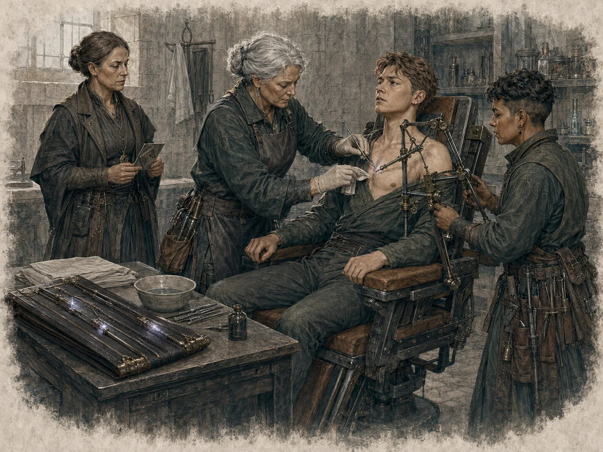
11. Ранги, должности и власть
Ранг отражает глубину физиологической адаптации, конфигурацию служебного кристалла и уровень рангового доступа. Должность и ранг — разные вещи. Начальник охраны, архивист, инженер объекта, дипломат или командир экспедиции — это служебные роли, а не альтернативные названия рангов.
| Ранг | Официальное название | Положение | Порядок получения |
|---|---|---|---|
| I | Кадет Хранителей | Полноценный член Гильдии начального ранга. | Вступление, служебный кристалл, присяга, стабилизация и первое испытание. |
| II | Офицер-Хранитель | Самостоятельный специалист или командир малой группы. | Подготовка, компетентность, заслуги и решение Гильдии. |
| III | Инженер-Хранитель | Старший специалист, руководитель объекта или операции. | Подготовка, руководство сложными задачами и решение Гильдии. |
| IV | Советник Гильдии | Один из восьми членов Совета Девяти IV ранга. | Только из действующих III рангов при вакансии и по процедуре Совета. |
| V | Главный Хранитель | Единственный активный центральный V-профиль Гильдии. | Только из действующих Советников IV ранга, после избрания и технологической активации V-профиля. |
Ранги приобретаются строго последовательно: I → II → III → IV → V. Должность можно сменить, оставить или перераспределить без автоматического изменения механического ранга.
12. Допуски и служебные документы
Ранг не открывает все двери автоматически. Для конкретной операции Хранитель получает мандат, маршрут и профильный допуск. Мандат определяет задачу и предел полномочий; маршрут перечисляет разрешённые зоны; допуск показывает, с какими сведениями, устройствами и образцами можно работать.
| Уровень | Обычный доступ | Чего не разрешает |
|---|---|---|
| Открытый | Публичные лекции, общие архивы, приёмные, гражданские мастерские. | Доступ к действующим операциям и персональным медицинским данным. |
| Служебный | Объект и документы, необходимые для назначенной задачи. | Копирование сведений вне отчёта или передачу другому подразделению без основания. |
| Закрытый | Активные операции, опасные технологии, полный журнал инцидента. | Неограниченный доступ ко всем закрытым материалам Гильдии. |
| Аварийный | Временное право войти в опасную зону и использовать перечисленные ресурсы. | Сохранение доступа после завершения угрозы. |
13. Полевой протокол
Хранитель не обязан понимать природу угрозы до прибытия на место, но обязан действовать так, чтобы незнание не стало причиной новой жертвы. Базовый порядок применяется к аномалиям, неизвестным механизмам, повреждённым кристаллам и местам с искажёнными законами среды.
- Остановиться до предполагаемой границы и назначить внешнего наблюдателя.
- Зафиксировать имена группы, время входа, цель и проверочную фразу; при риске искажения памяти записи ведут независимо два человека.
- Определить внешние признаки, возможный триггер, безопасный путь отхода и условия немедленной эвакуации.
- Не разделяться и не касаться ядра явления руками; образцы брать только подходящим инструментом.
- После выхода сверить три версии: полевой журнал, показания группы и запись внешнего наблюдателя.
- Передать отчёт профильному подразделению; сокрытие неудачи опаснее признанного провала.
14. Язык полевых отчётов
Гильдия разделяет рейтинг аномалии (R) и обычную археологическую сложность. Рейтинг аномалии описывает активный или остаточный феномен, способный изменять среду, тело, память, пространство или энергию. Обозначение АРХ относится к руинам и механизмам, где опасность создают обрушения, ловушки, токсичная пыль, остаточный заряд или неверное извлечение, а не сама аномалия.
Для R-зон базовая СЛ полевой проверки равна 10 + R, если описание явления не задаёт иной показатель. Эта формула помогает подготовить экспедицию, но не заменяет конкретные спасброски, урон и триггеры. Рейтинг аномалии не является CR существа и сам по себе не наносит урон.
| Класс записи | Смысл | Типичные действия |
|---|---|---|
| AS · след аномалии | Остаточное поле, разлом, петля, изменённая среда или память места. | Картирование границы, наблюдение, стабилизация. |
| HY · гибрид | Исторический или технический объект, повреждённый аномалией. | Инженерное обследование вместе с аномальным протоколом. |
| OP · операционный | Действующая, карантинная или стратегически контролируемая зона. | Допуск, охрана, журнал доступа и выполнение конкретной задачи. |
| AR · археонаходка | Не аномалия; риск связан с физическим состоянием и древними механизмами. | Раскоп, подпорки, консервация и безопасное извлечение. |
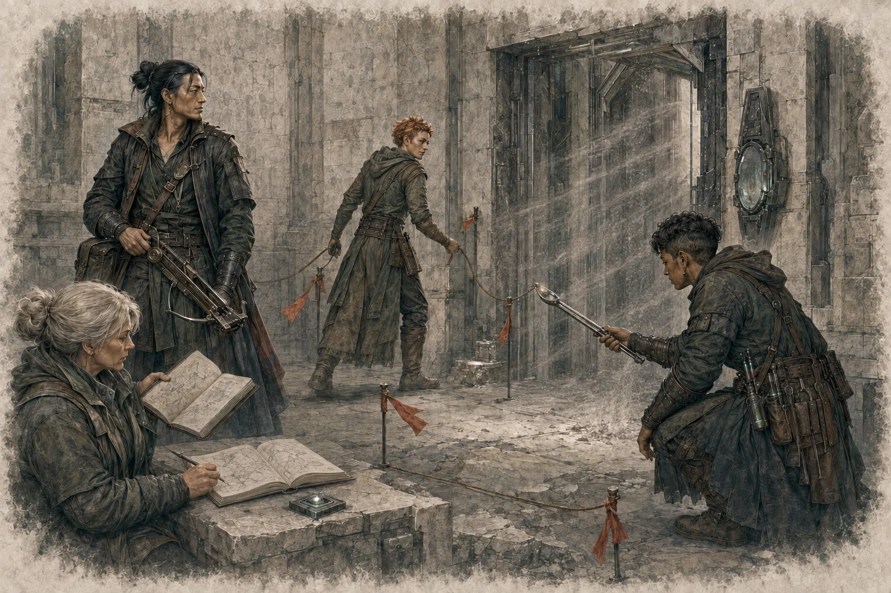
15. Снаряжение и поддержка
Мандат может включать компенсаторы, защитные маски, кристаллографические инструменты, сигнальные пластины, наборы для отбора проб и иное служебное имущество. Высокий ранг не означает, что персонаж постоянно носит весь арсенал Гильдии.
Резервный кристалл Гильдии — специальный механический термин. Если Хранитель находится более чем в 1 миле от функционирующих Башен Стража, доступный резервный кристалл позволяет использовать полный профиль «Защиты Хранителя». Ретранслятор — инфраструктурный узел передачи или усиления сигнала и сам по себе не заменяет резервный кристалл, если это прямо не указано в описании конкретного устройства.
Резервный кристалл не заменяет персональный служебный имплант, не отменяет его глушение и не требуется для остальных ранговых способностей только из-за удаления от Фар Мэддинга.
16. Как работают ранги
Иерархия дополняет класс и уровень персонажа WoT 5e. Ранг является организационно-сюжетной прогрессией и не повышается автоматически вместе с уровнем персонажа, опытом или одной проверкой. Все ранги приобретаются последовательно.
Наследование способности не означает арифметического сложения её чисел. Уникальные способности нижестоящих рангов сохраняются, если конкретное правило не говорит о замене. Если способность имеет отдельные параметры по рангам, применяется профиль текущего ранга. Характеристики и фиксированный бонус к максимуму хитов накопительны по своим специальным правилам; скорость, инициатива, спасброски, регенерация и параметры ранговых способностей используют итоговое значение текущего ранга.
17. Таблица рангов
| Ранг | Название | Характеристики | Максимум хитов | Скорость ходьбы | Инициатива | Спасброски |
|---|---|---|---|---|---|---|
| I | Кадет Хранителей | −1 к двум различным выбранным характеристикам | — | Без рангового бонуса | −1 | −1 ко всем |
| II | Офицер-Хранитель | Новый пакет: +2 к двум выбранным; предел 20 | +10 | +10 фт | +2 | +1 ко всем |
| III | Инженер-Хранитель | Новый пакет: +2 к двум выбранным; предел 20 | +30 всего | +15 фт | +5 | +2 ко всем; преимущество Инт и Мдр |
| IV | Советник Гильдии | Новый пакет: +2 к двум выбранным; предел 22 | +50 всего | +20 фт | Преимущество | +3 ко всем; преимущество Инт и Мдр |
| V | Главный Хранитель | Новый пакет: +2 к двум выбранным; предел 24 | +50 всего; ×3 вклад классовых Hit Dice | +30 фт | Преимущество и +10 | +5 ко всем; преимущество Инт и Мдр |
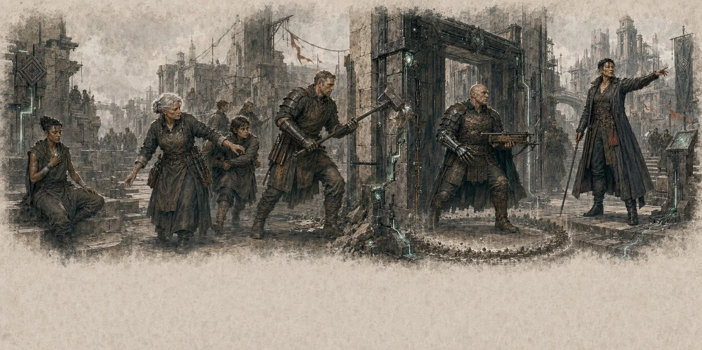
18. Характеристики, хиты и скорость
Стабилизация I ранга
При получении I ранга игрок выбирает две различные характеристики; каждая уменьшается на 1. Одну характеристику нельзя выбрать дважды. При получении II ранга оба штрафа полностью прекращаются до применения бонусов II ранга и никак не ограничивают дальнейший выбор характеристик.
Повышения II–V рангов
На каждом ранге II, III, IV и V персонаж получает новый накопительный пакет +2 к двум характеристикам. На каждом таком ранге можно выбрать новую пару. Предел характеристики: 20 на II–III рангах, 22 на IV и 24 на V. Пункты, не полученные из-за действующего предела, теряются и не сохраняются «на потом».
Максимум хитов и Hit Dice
Фиксированный бонус к максимуму хитов накапливается: II ранг +10, III ранг +30 всего, IV ранг +50 всего; на V сохраняется +50. Дополнительно V ранг утраивает вклад классовых Hit Dice в максимум хитов — ретроактивно для всех существующих уровней и для будущих уровней. Модификатор Телосложения не утраивается. Количество фактических Hit Dice для отдыха остаётся обычным.
Пример. Персонаж 10-го уровня с d10 и Телосложением +3 имеет обычный вклад Hit Dice в максимум хитов 10 + 9 × 6 = 64. На V ранге этот вклад становится 192; Телосложение даёт обычные 30, а Гильдия — фиксированные +50. Итог: 272 максимальных хита до учёта иных независимых источников.
Скорость
Бонус относится к базовой скорости ходьбы и является итоговым значением текущего ранга: +10 / +15 / +20 / +30 фт на II–V рангах. Другие режимы перемещения не меняются, если отдельное правило прямо этого не устанавливает.
Старение и долговечность
| Ранг | Ориентир | Смысл |
|---|---|---|
| I | 60–80 лет | Нормальная ожидаемая продолжительность жизни. |
| II | 90–120 лет | Заметное замедление возрастных изменений. |
| III | 130–160 лет | Устойчивая физиологическая стабилизация. |
| IV | 180–220 лет | Глубокое замедление старения. |
| V | 300+ лет | Нормальное биологическое старение практически приостанавливается; это не бессмертие и не иммунитет к смерти, болезням, ядам или повреждениям. |
19. Инициатива и спасброски
Ранговый модификатор инициативы является итоговым значением текущего ранга и прибавляется к обычным модификаторам персонажа. I: −1; II: +2; III: +5; IV: преимущество без отдельного числового бонуса; V: преимущество и +10.
Ранговый бонус к спасброскам также является итоговым: I −1, II +1, III +2, IV +3, V +5 ко всем спасброскам, включая спасброски от смерти. С III ранга персонаж совершает с преимуществом все спасброски Интеллекта и Мудрости независимо от источника эффекта. Несколько источников преимущества не складываются.
20. Регенерация
Регенерация · пассив · со II ранга. В начале каждого своего хода Хранитель восстанавливает хиты: II — 3, III — 5, IV — 10, V — 15. Вне инициативы восстановление происходит один раз за каждые 6 секунд. Короткий или продолжительный отдых не прекращает и не усиливает эту способность.
Регенерация срабатывает только если в момент её штатного триггера Хранитель жив, имеет не менее 1 обычного текущего хита и его служебный кристалл функционирует. При 0 хитах она не срабатывает и не стабилизирует персонажа; временные хиты не заменяют это условие. Если персонаж получил 1+ хит уже после пропущенного триггера, регенерация возобновится только в следующий штатный момент.
Способность восстанавливает только обычные текущие хиты и не создаёт временные хиты, не восстанавливает Hit Dice, применения способностей, утраченные части тела, истощение или состояния. Избыточное восстановление сверх максимума теряется. Эффект, запрещающий восстановление хитов, блокирует регенерацию.
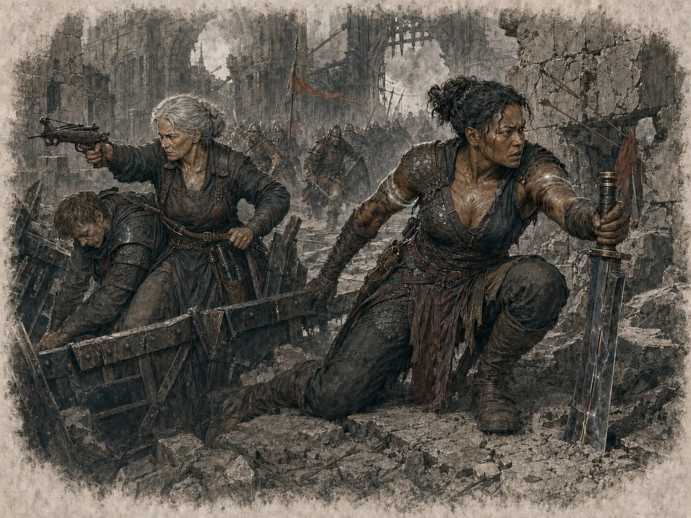
21. Тактическое превосходство
Тактическое превосходство · с III ранга · 1 раз в раунд. В каждом раунде Хранитель может использовать только один из двух вариантов ниже.
Перестроить порядок. В начале раунда, до первого хода, Хранитель меняет местами значения инициативы двух видимых существ. Перестановка не создаёт дополнительного хода и не лишает уже полученного хода; после начала первого хода раунда этот вариант недоступен.
Команда движения. Когда видимый союзник в пределах 60 фт заканчивает свой ход, Хранитель использует собственную реакцию. Союзник немедленно перемещается на расстояние до половины своей скорости без расходования собственной реакции. Это перемещение провоцирует атаки при возможности обычным образом.
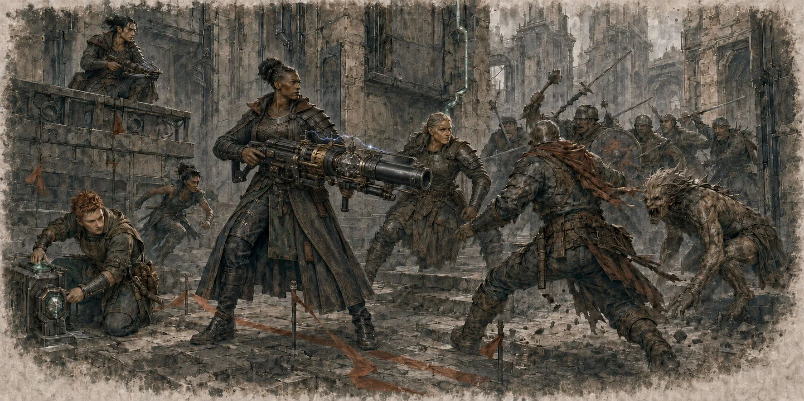
22. Защита Хранителя
Защита Хранителя · с III ранга · бонусное действие · 1 раз в день · концентрация. Использование восстанавливается на следующем рассвете; продолжительный отдых сам по себе не восстанавливает его раньше. Хранитель создаёт подвижную сферическую зону, постоянно центрированную на нём. Полный профиль длится до 1 минуты.
| Ранг | Радиус | Автоматический порог | СЛ |
|---|---|---|---|
| III | 10 фт | Плетения 1-го уровня и ниже | 12 |
| IV | 15 фт | Плетения 1–2-го уровня и ниже | 14 |
| V | 20 фт | Плетения 1–3-го уровня и ниже | 16 |
Автоматический порог. Плетение уровня, равного порогу или ниже, автоматически подавляется при попытке создать его внутри зоны либо при первом вхождении существующего эффекта в неё. Плетения 0-го уровня считаются ниже 1-го и всегда попадают под автоматический порог.
Плетения выше порога. Направляющий совершает обычную проверку Интеллекта с помехой против СЛ зоны: d20 + модификатор Интеллекта. Бонус мастерства и бонусы, относящиеся только к проверкам направления, не добавляются; общие модификаторы проверок Интеллекта применяются. При провале новое плетение не создаётся, но его ячейка или иной ограниченный ресурс расходуется. При провале уже существующего плетения оно рассеивается без нового расхода ресурса. Если другое правило независимо требует проверку направления внутри зоны, эта отдельная проверка также совершается с помехой.
Ресурсы. Ограниченное бесплатное применение плетения или заряд предмета расходуются даже при автоматическом подавлении или провале проверки. Неограниченный кантрип не теряет отдельного ресурса, но потраченное действие не возвращается.
Вход и пересечение. Если хотя бы часть существующего плетения или его области впервые пересекает зону, разрешается всё плетение целиком: автоматическое подавление или провал рассеивает его полностью, успех позволяет ему работать целиком. Пока пересечение непрерывно, повторных проверок нет; после полного выхода и нового входа проверка выполняется снова. Движение самой зоны через существующее плетение считается входом. Мгновенное перемещение Хранителя переносит зону сразу в новое положение без прохождения через промежуточное пространство.
Положение создателя не даёт иммунитета: если новое или мгновенное плетение должно создать эффект на существе, предмете, точке или области внутри зоны, сначала применяются эти правила. Если направляющий сам находится внутри зоны, его попытка создать плетение также проходит «Защиту Хранителя» независимо от положения цели. Простое пересечение воображаемой линии между создателем и полностью внешней целью не считается входом эффекта в зону.
Артефакты. Ангреал и са’ангреал сами по себе не обходят поле и не дают бонуса к проверке; для автоматического порога используется фактический уровень, на котором плетение создаётся после усиления. Автономная функция тер’ангриала не отключается автоматически, но созданное или усиленное им плетение взаимодействует с зоной обычным образом. Колодец Силы также не даёт иммунитета.
Перекрытие нескольких зон. Эффекты не складываются и не требуют нескольких проверок. В области перекрытия используется наиболее сильный фактический профиль: сначала более высокий автоматический порог, затем более высокая СЛ.
Ослабленный профиль вдали от Башен Стража
На расстоянии более 1 мили от функционирующих Башен Стража без доступного резервного кристалла Гильдии зона использует ослабленный профиль: III — радиус 5 фт и СЛ 9; IV — 5 фт и СЛ 11; V — 10 фт и СЛ 13. Автоматическое подавление ограничено плетениями 1-го уровня и ниже, а длительность составляет 6 раундов. Наличие резервного кристалла возвращает полный профиль, но не заменяет служебный имплант и не отменяет его глушение.
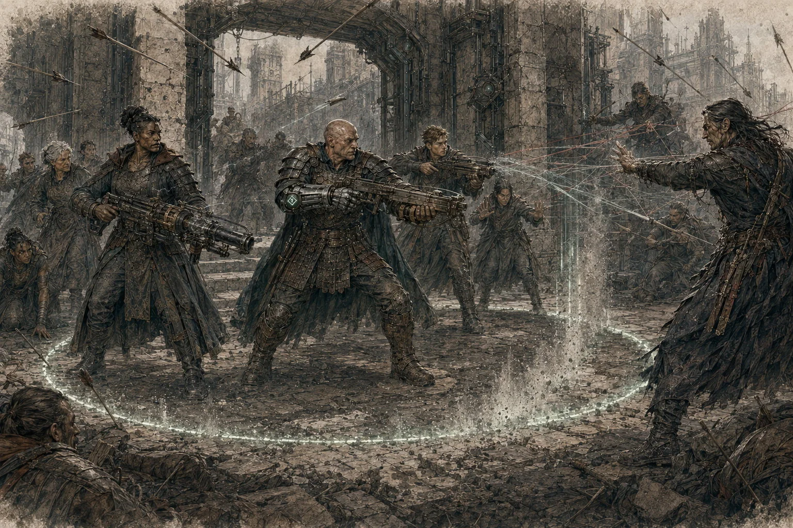
23. Энергетический щит
Энергетический щит · IV ранг · пассив. Пока служебный кристалл функционирует, Хранитель получает постоянный +2 к КД против всех бросков атаки и сопротивление урону, непосредственно причинённому плетением Единой Силы.
Если плетение добавляет урон к обычной атаке оружием, сопротивление применяется только к части урона, добавленной плетением. Вторичные физические последствия — падение, обрушение, обычный огонь, яд, оружие или иная среда — не получают сопротивление только потому, что когда-то были вызваны плетением. Аномальный урон также не уменьшается, если отдельное правило не говорит обратного.
24. Адаптация к аномалиям
Адаптация к аномалиям · IV ранг · пассив. Хранитель невосприимчив к постоянным фоновым отрицательным эффектам среды, которые Мастер прямо определил как свойства аномальной зоны. Это не распространяется на атаки существ, отдельные импульсы, ядра, всплески и другие события с собственной механикой.
Хранитель совершает с преимуществом спасброски против эффектов аномалий и плетений Единой Силы. Это преимущество не превращается в автоматический иммунитет.
Перенаправление всплеска · реакция · 1/продолжительный отдых. Когда Хранитель воспринимает случайный аномальный всплеск в пределах 30 фт, он может отменить одно конкретное воздействие для одной цели либо перенаправить его на другую допустимую цель или точку в пределах исходной области. Способность не отменяет всю аномалию и не прекращает весь площадной эффект.
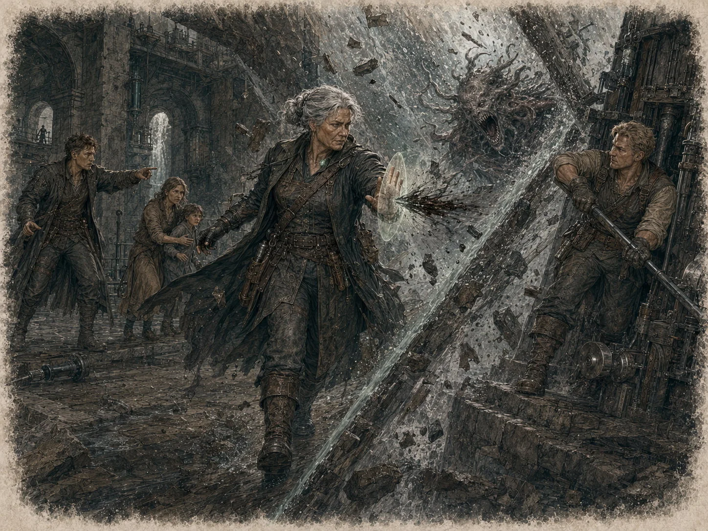
25. Владыка Стража
Владыка Стража · V ранг. Главный Хранитель получает высший персональный интерфейс с подключёнными системами Гильдии, главным аккумулятором и известными Гильдии управляющими интерфейсами Стража. Это позволяет отдавать предусмотренные системой команды без физического терминала, но не создаёт у устройств новых функций и не раскрывает автоматически неизвестные возможности древних механизмов. Для дистанционного управления требуется фактическая связь с соответствующей сетью или узлом.
Управление доступом · действие · 1/продолжительный отдых · до 1 минуты · без концентрации. Главный Хранитель создаёт подвижную сферу радиусом 60 фт, центрированную на себе, и выбирает режим «доступ разрешён» или «доступ подавлен». Белого списка нет: режим применяется ко всем направляющим в области. В Фар Мэддинге «доступ разрешён» открывает локальное окно в обычном поле Стража; вне города «доступ подавлен» создаёт локальную зону запрета. Обычное подавление запрещает принимать Источник и начинать новые плетения, прерывает уже удерживаемую связь с Источником, но не рассеивает автоматически самостоятельные или закреплённые существующие плетения и автономные функции тер’ангриалов. Зона заканчивается раньше при недееспособности, смерти, глушении служебного кристалла или полном отзыве.
Полное подавление · действие · 1/продолжительный отдых · 1 минута · радиус 60 фт · без концентрации. Это отдельный ресурс. В сфере направляющие не могут ощущать Источник, принимать или удерживать Саидин/Саидар и создавать плетения. Удерживаемая связь с Источником немедленно прекращается. Существующие эффекты плетений подавляются внутри сферы; эффекты, требующие концентрации или постоянного удержания, заканчиваются, если их создатель попадает под полное подавление. Самостоятельные и закреплённые плетения не обязательно рассеиваются навсегда: их эффект подавлен внутри сферы и может возобновиться после выхода, если длительность ещё не истекла. Ангреалы и са’ангреалы не обходят подавление; автономные функции тер’ангриалов продолжают работать, если их собственное правило не устанавливает иное.
Приоритет. При перекрытии режимов действует наиболее строгий: Полное подавление → Управление доступом «подавлен» → Управление доступом «разрешён». Разрешённый доступ не отключает активную «Защиту Хранителя».
Пассивная защита. Направляющий, находящийся в пределах 60 фт от Главного Хранителя и совершающий бросок атаки плетением непосредственно по нему, делает этот бросок с помехой. Способность не изменяет СЛ плетения, не действует на плетения только со спасброском и не создаёт помеху для обычной оружейной атаки. Если активна «Защита Хранителя», сначала разрешается поле, затем — бросок атаки.
«Владыка Стража» работает и вне Фар Мэддинга и не требует резервного кристалла только из-за удаления от города. Он также не подавляет, не закрывает и не рассеивает аномалии сам по себе.
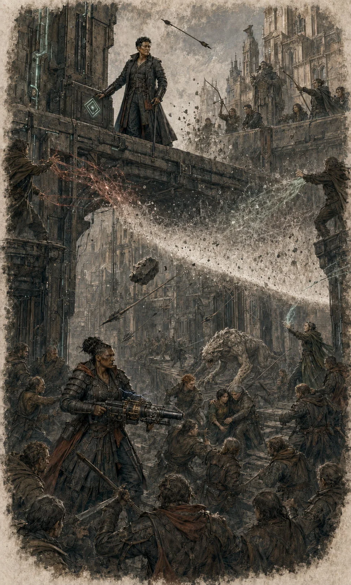
26. Мастер хитрости
Мастер хитрости · V ранг · реакция · 1 раз в раунд. Когда видимый враг начинает действие, но до разрешения его первого броска или эффекта, Главный Хранитель использует реакцию и подаёт сигнал одному союзнику, способному видеть или слышать его.
Союзник немедленно совершает одну атаку оружием по этому врагу без расходования собственной реакции. Искусственного ограничения 60 фт для врага нет: действуют обычные досягаемость и дальность выбранного оружия. Плетение, предмет или иное действие вместо этой атаки использовать нельзя.
После атаки враг продолжает уже начатое действие, если всё ещё способен его выполнить. Если атака убила, сделала недееспособным или иным образом лишила врага возможности выполнить начатое действие, оно не разрешается.
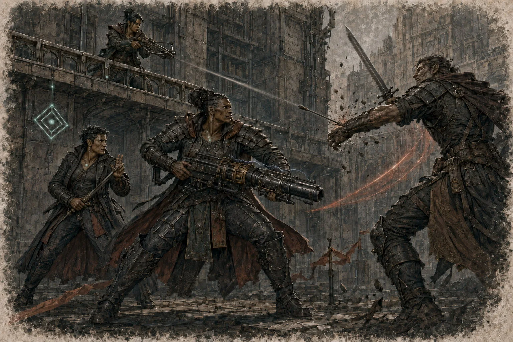
27. Подавление и отзыв кристалла
Временное глушение служебного кристалла не изменяет ранг и не является полным отзывом. Сохраняются устойчивые физиологические, числовые и обученные преимущества: пакеты характеристик, максимум хитов и V-ранговое утроение вклада Hit Dice, скорость, инициатива, бонусы спасбросков, преимущество Интеллекта/Мудрости, Тактическое превосходство, пассивная Адаптация к аномалиям и Мастер хитрости.
При глушении отключаются регенерация, Защита Хранителя, Энергетический щит, Перенаправление всплеска, Управление доступом, Полное подавление, V-ранговая пассивная защита от атак плетениями и нейрокристаллический доступ к инфраструктуре. Уже действующие активируемые способности, которым требуется работа кристалла или канала, немедленно заканчиваются; оставшаяся длительность теряется, а потраченное применение не возвращается. После восстановления кристалла постоянные пассивные системы возвращаются автоматически, но прерванные активируемые эффекты сами не возобновляются.
Повреждение и перегрузка. Физическое повреждение кристалла само по себе не считается полным отзывом. Если конкретный эффект не устанавливает иное, серьёзный временный отказ разрешается как глушение до восстановления. «Перегрузка» — категория технологического осложнения, а не универсальное состояние: конкретная авария сама задаёт спасбросок, СЛ, длительность и последствия. «Кристалл-призрак» также является особым осложнением и не возникает после каждой поломки.
Полный отзыв окончательно прекращает ранговую связь и снимает все механические числовые преимущества и способности Гильдии. Из характеристик удаляется только фактически предоставленный Гильдией прирост; неполученные из-за предела пункты не вычитаются, а независимые улучшения сохраняются. Одновременно исчезает гильдейское повышение максимального значения характеристик; если после пересчёта значение превышает максимум, разрешённый оставшимися источниками, оно уменьшается до этого максимума. Если новый максимум хитов ниже текущих хитов, текущие хиты уменьшаются до нового максимума.
Полный отзыв не вызывает автоматической потери памяти, личности, рассудка или «догоняющего» старения. Ранее произошедшие необратимые физиологические изменения не исчезают мгновенно, но дальнейшее ранговое замедление старения прекращается.
28. Продвижение и цена
Продвижение по рангам является организационно-сюжетной процедурой. Оно не привязано автоматически к уровню персонажа, количеству опыта, одной проверке или универсальной СЛ. При повышении Гильдия учитывает обучение, экзамены, компетентность, заслуги, дисциплину, изобретения и собственные организационные потребности.
| Переход | Что требуется |
|---|---|
| I | Полноценное вступление, присяга, служебный кристалл и формирование персонального рангового канала. |
| I → II | Подготовка и решение Гильдии; конкретные экзамены и задания зависят от кампании. |
| II → III | Подтверждённая компетентность и решение Гильдии; один успешный бросок не создаёт автоматического повышения. |
| III → IV | Только при вакансии Советника и по специальной процедуре Совета. |
| IV → V | Только из действующих Советников IV ранга, по процедуре избрания и после технологической активации V-профиля. |
Добровольный выход. Хранитель может подать прошение о прекращении членства. Само заявление не выключает способности; после предусмотренной процедуры проводится штатный полный отзыв. Стандартной процедуры добровольного механического понижения на один ранг нет: персонаж может оставить должность, сохранив ранг, либо полностью прекратить ранговую связь.
Высокий ранг не означает обязательной «утраты человечности». Сдержанность, рациональность и дистанция могут быть культурными или личными чертами, но служебный кристалл не подавляет эмоции, эмпатию или свободу роли.
29. Краткая памятка игроку
- Уточни у Мастера подразделение, должность, поручителя и текущий мандат персонажа.
- Помни: направляющий не может иметь активный ранг Гильдии, как и носитель активного ранга другой Иерархии.
- Отделяй гражданский кристалл от служебного рангового кристалла, а ранг — от должности.
- На I ранге выбери две разные характеристики для временного −1. Начиная со II ранга на каждом новом ранге выбирай новую пару для пакета +2, соблюдая предел текущего ранга.
- Для инициативы, спасбросков, скорости и регенерации используй итоговый профиль текущего ранга, а не сумму строк.
- «Защита Хранителя» используется 1 раз в день и восстанавливается на следующем рассвете. Более чем в 1 миле от функционирующих Башен Стража проверь наличие резервного кристалла Гильдии.
- Подавляющие зоны действуют на союзников и противников; для плетений выше порога проверка поля — обычная проверка Интеллекта с помехой.
- Временное глушение и полный отзыв — разные состояния. Глушение выключает только зависящие от кристалла системы; полный отзыв снимает весь механический ранг.
- Высокий ранг даёт возможности, но не отменяет мандаты, аудит и установленную процедуру Совета.
30. Словарь
| Термин | Определение |
|---|---|
| Страж | Древний тер’ангриал Фар Мэддинга, являющийся первичной основой подавления Единой Силы. |
| Башни Стража | Более поздняя инфраструктура Гильдии, усиливающая, стабилизирующая и распределяющая доступные параметры защитного поля. |
| Гильдия Хранителей | Технократическая организация Фар Мэддинга, управляющая ранговой системой, частью городской инфраструктуры, обороной и исследованиями. |
| Служебный ранговый кристалл | Индивидуальный интегрированный имплант Хранителя; сам по себе физический кристалл не переносит ранг другому носителю. |
| Ранговый канал | Персональная технологическая связь носителя с его ранговым профилем и разрешёнными системами Гильдии. |
| Резервный кристалл Гильдии | Устройство, позволяющее использовать полный профиль «Защиты Хранителя» более чем в 1 миле от функционирующих Башен Стража. |
| Ретранслятор | Узел передачи или усиления сигнала. Не заменяет резервный кристалл, если это не указано прямо. |
| Защита Хранителя | Ранговая подвижная зона подавления плетений III–V рангов с параметрами текущего ранга. |
| Управление доступом | V-ранговая временная 60-футовая зона, разрешающая или подавляющая доступ к Источнику; отдельна от «Защиты Хранителя». |
| Полное подавление | V-ранговая 60-футовая зона наиболее строгого подавления Единой Силы на 1 минуту без концентрации. |
| Рейтинг аномалии (R) | Оценка силы аномальной зоны; если не указано иначе, базовая СЛ аномалии равна 10 + R. |
| АРХ-уровень | Оценка физической и технической опасности археонаходки; не является рейтингом аномалии. |
МЕРА · ЗНАНИЕ · НЕЙТРАЛИТЕТ